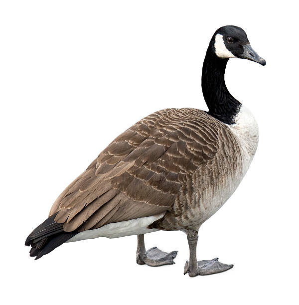
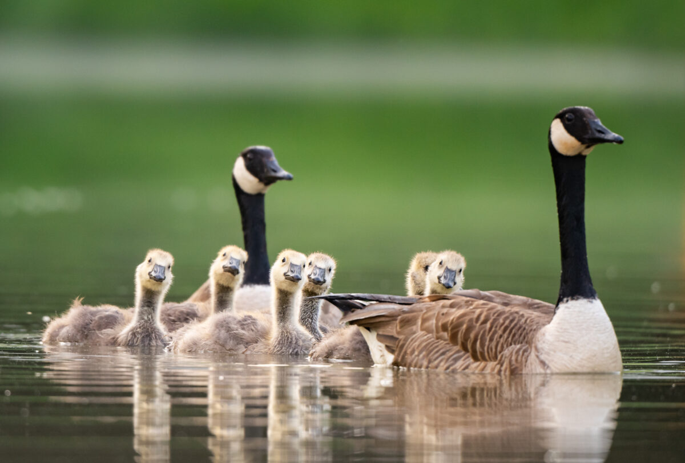
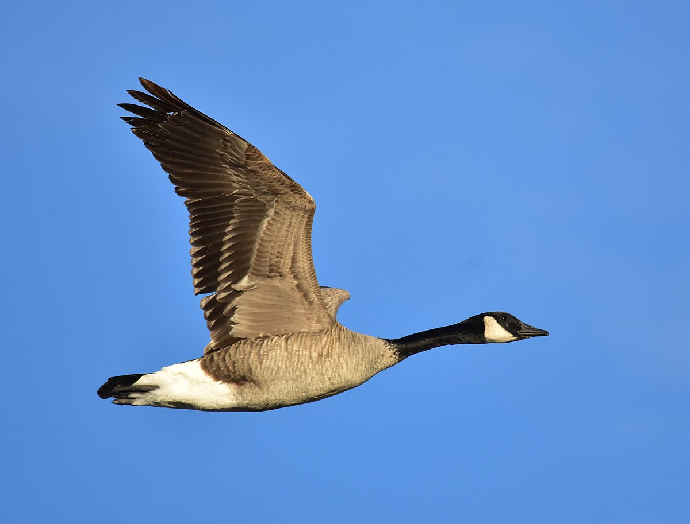
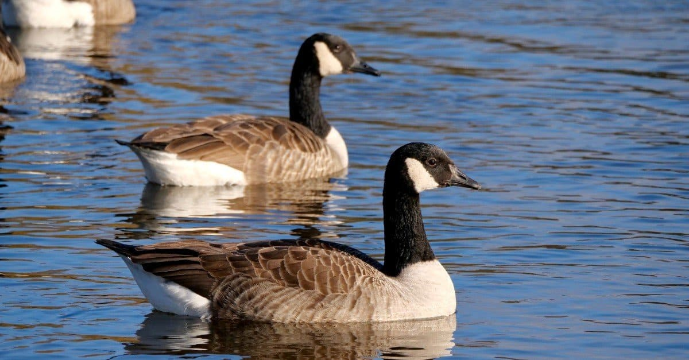
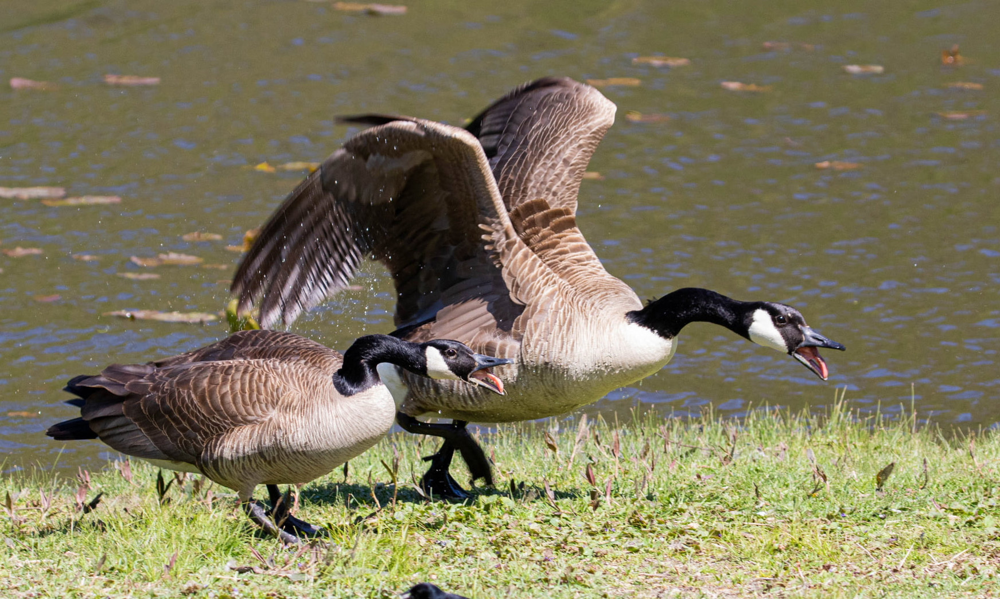
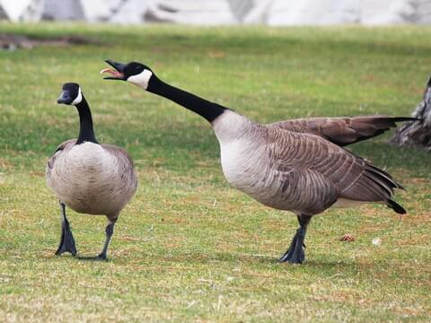

This is a picture of a Canadian Goose. It is quite beautiful. There is a flock of Canadian Geese at Endicott who have stayed despite the frigid temperature. These geese are what I refer to as "mad lads", and I am very impressed by their persistence. They leave trails of poop all over the campus, and there is really no getting around it. At one point or another, we'll all succumb to goose poop on the bottoms of our shoes. It is a truly dreadful fate.

This is a picture of a family of Canadian Geese. There are two parents and six little geeselings. I don't know if they're actually called geeselings, I would assume not, but that's what we're rolling with. It is pretty cool how the geeselings start off looking nothing like their parents. I wonder when they get their canadian appearance. Maybe there is some sort of changing ritual they perform when they are of age. These geese are quite mysterious...

This is a picture of a Canadian Goose flying. It is rather majestic, or at least I think so. A lot of people underappreciate geese, I was one of them to be honest, but doing this assignment and seeing these pictures and typing these little segments out is really making me appreciate them. Canadian Geese make silly honking noises, oftentimes they'll honk as they fly, maybe to signal other geese to follow them.

This is a picture of two Candian Geese floating in a body of water together. One might wonder if these two geese share a relationship with one another. Maybe they are lovers, maybe they are friends, maybe they are family, who knows. All I know is that they are Canadian Geese. Fun fact, their feathers and the composition of their body allow them to withstand cold temperatures. That's why the Endicott flock stayed so long into the winter.

This is a picture of two Canadian Geese who appear to be pretty angry. The upward position of the goose's wings indicate a primal attack stance. In other words, this goose means business. Do not be fooled by their silly honks and graciousness, for these creatures are most certainly combat-adept. I haven't had to fight one yet, but I fear that day is coming... No amount of training could prepare me for a battle like that.

This is a picture of a Canadian Goose sticking it's tongue out. I guess you could say it is being a silly goose (insert laugh track). On the other hand, this could be the goose's victory cry after mercilessly slaying an opponent. Like I said, geese can be deadly, it is best to observe and admire from a distance. They are truly a force to be reckoned with. Anyways, hope you've enjoyed this series of Canadian Geese images, toodles!